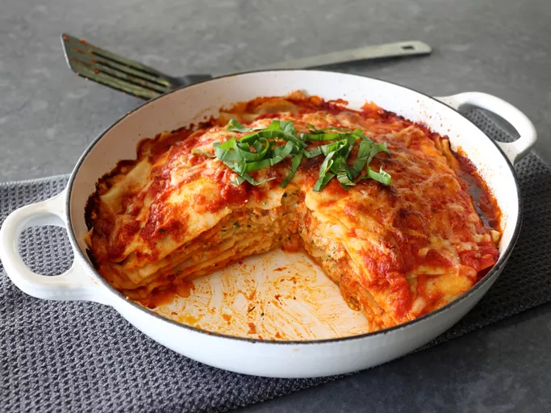

Handkerchief Lasagna

Description
Chef John's handkerchief lasagna is made with paper-thin homemade pasta sheets, folded over a delicate ricotta filling and a light amount of pasta sauce. These filled "handkerchiefs" are then layered to create one of the best versions of lasagna ever.
Ingredients
- 2 cups all-purpose flour
- 3 large eggs
- 12 ounces ricotta cheese
- 1 ounce Parmesan cheese, grated
- 1 large egg yolk
- 1/4 cup finely minced Italian parsley
- 1/2 teaspoon freshly ground black pepper
- 1 pinch cayenne pepper
- 3 cups prepared marinara sauce
- 6 fresh basil leaves, torn
- 4 ounces mozzarella cheese, shredded
- 1/4 cup grated Parmesan cheese
Steps
- Make a pile of flour on a work surface, and make a well in the center. Add eggs to the well, and scramble eggs with a fork, gradually incorporating flour from the edges. When the dough becomes too thick to use a fork, use a bench scraper to lift remaining dry flour over the top and begin to cut flour in until a shaggy dough forms.
- Knead dough by hand until to form a smooth ball, about 3 minutes. Cover and let rest for 10 to 15 minutes. Knead until a very smooth and elastic ball of dough forms, about 4 minutes more. The dough recipe makes enough for 2 lasagnas; divide dough in half; wrap tightly and rest 1 piece of dough in the refrigerator for at least 2 hours or up to overnight. Freeze remaining dough for another use.
- For cheese filling, add ricotta, Parmesan, egg yolk, parsley, salt, black pepper, and cayenne to a bowl, and stir together until evenly combined. Cover and refrigerate until needed.
- Preheat the oven to 450 degrees F (230 degrees C).
- Shape pasta dough with lightly floured hands into a rectangle about 1 inch thick. Roll dough out with a rolling pin on a lightly floured work surface into a large, very thin rectangle. The thinner and larger it is, the better. Turn dough over occasionally during rolling to prevent sticking, and dust with flour as needed. Use a pizza cutter to divide dough lengthwise down the center into 2 long strips.
- Bring a large pot of lightly salted water to a boil over high heat. Slowly lower pasta strips into boiling salted water, and cook for 1 minute 30 seconds. Transfer dough into a bowl of cold water until cooled. Transfer onto work surface and cut each strip in half widthwise to make 4 pieces total.
- Set aside about 1/2 cup of cheese mixture. Dollop the rest of cheese mixture by spoonfuls evenly over the 4 pasta pieces, and spread it out roughly but evenly. Spoon about 1/3 cup of pasta sauce onto each piece.
- Top each piece of pasta with torn basil. Set aside 3/4 cup mozzarella; scatter the rest evenly over pasta. Fold each piece of pasta in half to form the stuffed handkerchiefs.
- Spread a layer of sauce on the bottom of the baking dish, and place the first handkerchief in the dish. Spread over 1/3 of reserved cheese mixture, followed by a few spoons of sauce, and another small scatter of shredded mozzarella. Repeat layering with remaining 3 handkerchiefs. Top with sauce, remaining mozzarella, and a dusting of Parmesan. Drizzle with olive oil.
- Bake in the preheated oven until the top is lightly golden brown and the pan is bubbling around the edges, 25 to 30 minutes. Let rest for 10 to 15 minutes. Cut into quarters to serve.
Home